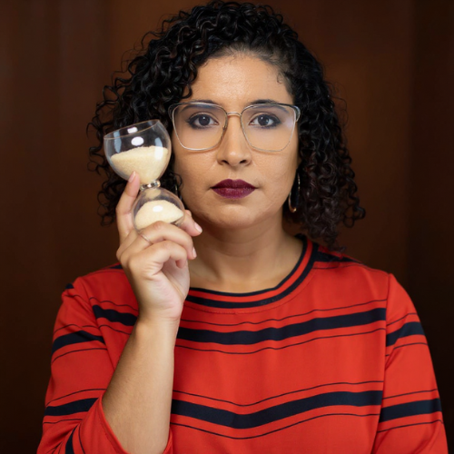

Mentoria Trabalhista
Mentoria Trabalhista
Mentoria Trabalhista
Mentoria Trabalhista
A Dra. Mayra Cavalcanti é uma advogada trabalhista com vasta experiência em legislação trabalhista brasileira, especializada em orientação estratégica para empresários e profissionais de Recursos Humanos.
Além de sua atuação como advogada, a Dra. Mayra é professora na Universidade Maurício de Nassau (UNINASSAU) - Campus Paulista, onde compartilha seu conhecimento e experiência com futuras gerações de profissionais.

"A mentoria da Dra. Mayra transformou a forma como nossa empresa lida com questões trabalhistas. Hoje temos segurança legal e conformidade total com a legislação."
"Como profissional de RH, pude compreender melhor as nuances da legislação trabalhista através da orientação especializada da Dra. Mayra."
O escritório de advocacia do qual a Dra. Mayra é sócia fundadora atua com foco em Direito Trabalhista, oferecendo soluções jurídicas completas para empresas e profissionais que buscam conformidade legal e proteção de seus direitos.
Todos os serviços estão em conformidade com as normas da OAB Brasil e OAB Pernambuco, garantindo ética profissional e excelência no atendimento.
Descubra como podemos ajudar sua empresa a estar em conformidade com a legislação trabalhista.
Entre em Contacto